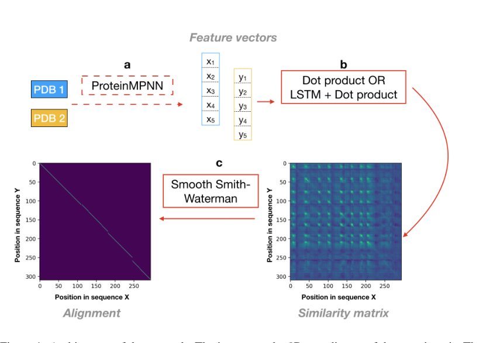
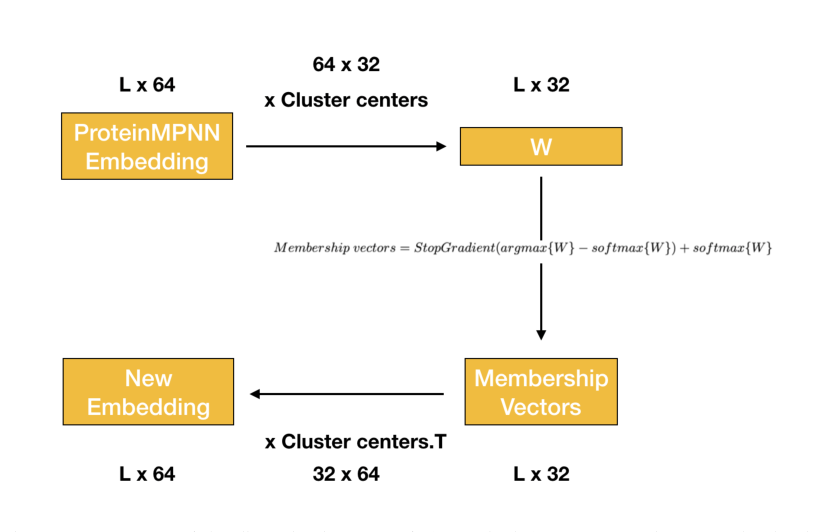
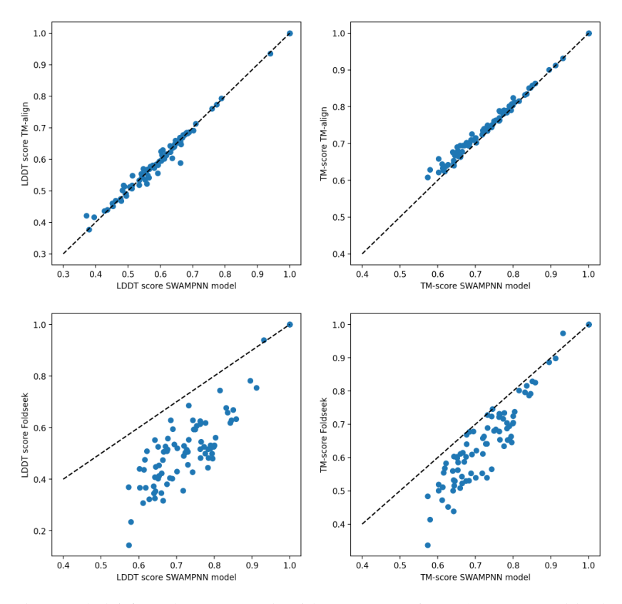

Unified Model of Protein Evolution
SWAMPNN: End-to-end protein structures alignment
Introduction
With the recent success of methods such as AlphaFold2 [1] and RoseTTAFold [2], hundreds of millions of protein structures with near-experimental quality are available. This offers a new horizon in understanding how to relate sequence, structure, and function. One application of structure comparison is the improvement of homology search, the task of identifying similar regions in protein sequences likely due to shared ancestry. Biologists use homology search to build databases of annotated proteins [3] and formulate hypothesis by comparison. Given a query protein with an unknown biological function, a common strategy is to use sequence similarity search in order to find homologous sequences with a known function [4,5]. Homology search methods based on sequence similiarity have been very powerful and reliable when the query and the homologs exhibit a high sequence similarity. However, it is still a challenge to annotate proteins using just the sequence information when there is a low sequence similarity [6]. Incorporating structure comparison into homology search offers the potential to improve the detection of remote homologs when structure has been conserved. Indeed, alignment methods using structural information have been shown to offer a higher sensitivity at longer evolutionary distance [7]. Standard state-of-the art structural alignment tools such as TM-align [8] and Dali [9] are too computationally expensive to apply to a large scale comparison of structures in these huge new databases of protein structures. The first reason is that sequence based search tools use fast pre-filter algorithms that speed up the search by orders of magnitude. Second, the structural similarity scores computed by these methods are non-local, meaning that efficient dynamic programming algorithms such as Smith-Waterman cannot be used. Here, we introduce a method to structurally align protein pairs with dynamic programming.
We are developing a model that aligns a pair of proteins using their 3D structures. Our model, SWAMPNN, takes as inputs the 3D coordinates of each protein structure, then transforms the coordinates of each position into a vector of features using the encoder of the ProteinMPNN neural network [10]. After some optional transformations of these features (via a LSTM layer), the scalar product is taken between all pairs of positions between the two proteins to obtain a similarity matrix. Under the assumption that the feature vectors encode relevant information about the structure, we expect pairs of positions that should be aligned to have similar feature vectors, and thus to have a high dot product. A differentiable and smooth version of Smith-Waterman [11] is then applied to this similarity matrix to obtain an alignment. Using a differentiable version of Smith-Waterman allows us to include the alignment step when training the neural network, making our approach end-to-end. We tested two different loss functions. First, we considered the cross entropy loss between the alignment found by our method and the alignment given by TM-align [8]. The second one relies on the maximization of LDDT scores. We obtained similar results with both. We are also developing a categorical version of the network, where the structure is embedded into categorical variables, that will allow us to use pre-filtering sequence based tools in the future. We show promising preliminary results for this categorical version.
We evaluated our method on two different tasks: pairwise alignment, and structure classification based on structure similarity. We show that our method produces alignments with TM-scores 1.2% lower on average than TM-align and that we outperform TM-align in terms of LDDT scores by 0.2% on average. For structure classification, we show that our method is able to outperform Foldseek [12] for family, super family, fold detection, and for the alignment task.
Related works
Standard structural aligners. Structural alignment tools such as TM-align [8] or DALI [9] can align protein structures using superposition, even when sequence based methods fail because of low-sequence similarity. However, these algorithms do not use dynamic programming and are very computationally expensive. Therefore, they are not well adapted for databases with hundred of millions of structures.
Our work builds on the Foldseek structure comparison method, which discretizes the query and target structures into sequences over an alphabet of 20 letters learned using a vector-quantized variational autoencoder [12]. The 20 states, called 3Di states describe for each residue the geometrical conformation with its closest neighbors. This transformation from the structure to a sequence enables use of existing sequence search tools [13] with highly optmized implementations, speeding up by orders of magnitude the search while giving similar results to structural alignment methods such as TM-align [8]. Unlike our model, the Foldseek network is not trained end-to-end; the 3Di states are learned by training an autoencoder, and then a BLOSUM-like substitution matrix is computed from the empirical substitution frequencies of the 3Di states.
Methods
ProteinMPNN
is a message passing neural network that aims to find an amino acid sequence that will fold into a given structure [10]. The network takes as inputs the 3D coordinates and computes the following information for each residue: (i) the distance between the N , C α , C, O and a virtual C β atom, (ii) the C α -C α -C α frame orientation and rotation, (iii) the backbone dihedral angles, and (iv) the distances to the 48 closest residues. The full network is composed of an encoder and a decoder with 3 layers each. For our task, we use the encoder to obtain an embedding of each position that contains relevant information about the structure and do not use the decoder. We tested two different strategies. First, we used the pretrained encodings of MPNN directly as input to our network. Second, we trained the weights of the encoder of ProteinMPNN as part of our neural network.
Smooth and Differentiable Smith-Waterman
We apply the smooth and differentiable Smith-Waterman algorithm as implemented in [11]. The Smith-Waterman algorithm is a dynamic programming algorithm that inputs two sequences and a matrix of alignment scores for all pairs of positions and returns the optimal (highest scoring) alignment between the pair of sequences. The smooth version instead returns a distribution over alignments where higher scoring alignments are more likely. (This is achieved by replacing the max function with logsumexp. See [11] for details.) The extent to which this distribution is concentrated on the optimal alignment is controlled by the temperature parameter. The smoothing operation makes the algorithm differentiable, and therefore applicable in neural network pipelines.
Architecture of the SWAMPNN alignment network
The network, called Smith-Waterman Alignment Message Passing Neural Network (SWAMPNN), takes as input the 3D coordinates of the two proteins. These coordinates are transformed into a vector of features for each position using ProteinMPNN. The training can include learning this transformation or the pretrained weights of ProteinMPNN can be taken without changing them. These vectors of features are then optionally transformed by a LSTM or by a 1D convolutional layer. When the weights of ProteinMPNN are not trained, we need to do a transformation, otherwise there are no parameters to learn. The dot product is then taken between the features of the two proteins to obtain a similarity matrix A with matrix elements a i,j corresponding to the score of aligning i with j. Lastly, the Smooth-Smith-Waterman algorithm is applied to the similarity matrix to obtain an alignment. The Smooth-Smith-Waterman algorithm outputs the probability that a position pair is aligned, therefore we obtain a soft alignment. In order to get an hard alignment, in other words to have P( i,j aligned) = 0 or P( i,j aligned) = 1, we take a very low temperature T in the Smooth-Smith-Waterman scoring function. The temperature is therefore decreased during training from T = 5 to T = 0.1.
Categorical SWAMPNN
In order to use sequence based pre-processing tools, the discretization of the query and targets structures is needed. Therefore, we developed a modified version of our SWAMPNN network, Categorical SWAMPNN, that includes a discretization step. For this, we used the architecture that does not include the LSTM.
Instead of representing each position of the sequence by a vector (the output of Protein MPNN), each position will be associated with a discrete identifier representing a cluster center. More precisely, after training the network as described above, we embed all protein structures from the training set, perform k-means clustering with k = 32 to find initial cluster centers, then continue training the network allowing the centers update. First, we take the dot product between the embedding and the cluster centers, then a membership vector is obtained using the stop gradient trick. Lastly, we take the multiplication of the membership vector with the cluster centers to obtain a new embedding.
To obtain a categorical variable at each position, it would be natural to select the identifier of the closest center, however this operation is not differentiable. Instead, for each embedded position we take the dot product with all k = 32 centers and compute a 32-dimensional "membership vector" for each position by taking the argmax using the stop gradient trick: (1) M embership vectors = StopGradient(argmax{W } -sof tmax{W }) + sof tmax{W } (2) Lastly, we multiply these membership vectors with the transposed matrix of the cluster centers to obtain new embeddings, which are then used to produce the similarity matrix (as in box b of Figure 1). When the membership vector is a binary unit vector, the new embedding is precisely the center of the cluster to which it belongs. This procedure is summarized in Figure 2. The initialization of cluster centers using k-means is crucial. Indeed, we observed that a naive initialization led to the network to be stuck in a local minimum.


Loss Functions
We experimented two types of loss function to train the network. First we consider the cross-entropy between the TM-align structural alignment and the predicted alignment: where e ij = 1 if TM-align predicts the position i in the first protein and j in the second to be aligned, and 0 otherwise. The value p ij is the predicted probability that the two positions are aligned according to our method.
The second loss function we consider is a smoothed version of the LDDT (local distance difference test) score, which measures how well the local environment in a reference structure is reproduced in the aligned structure. An advantage of using this loss function is that it does not depend on any external computation such as TM-Align, making the model more end-to-end. The LDDT score, in contrast to other scores such as TM-scores or GDT scores, is not dependent on the relative orientation of domains. We compute the LDDT loss as follows. First, we compute the distance between all C α pairs in the reference structure that are closer than 15 Å. This gives two pairwise distance matrices D 1 and D 2 , one for the query, and the other for the aligned target. A distance is considered to be conserved in the aligned structure if it is within a certain tolerance threshold. In practice, an average is made between 4 thresholds: 0.5, 2, 4 and 8 Å. In order to make the LDDT score smooth, we apply the sigmoid function rather than count the number of pairs of conserved distances at a threshold t:
The temperature parameter T controls how smooth the sigmoid function is. In the limit T → 0, we retrieve the usual LDDT score. The temperature was decreased from T = 5 to T = 0.1 during training. An average is made over 4 thresholds t: 0.5, 2, 4 and 8 Å.
Training data
To train the network, we collected the non-redundant set of 9, 846 proteins from [14]. Redundancies were removed at 25% sequence identity cutoff. This dataset contains structures with at least 40 residues per chain, with X-ray resolution < 2 Å. Proteins with a length < 300 were selected in order to optimize the training time. We made an all-versus-all TM-align search, and selected pairs with a TM-score > 0.6 in either direction. Of these pairs, we selected 100 pairs for our test set. Of the remaining pairs, we removed any which contained a sequence that appeared in one of the test set pairs. From the remaining pairs, we selected a training set with 28, 000 pairs. This process guarantees that the sequences seen during training have no more than 25% identity with any sequence in a test set pair.
Results
Comparison between SWAMPNN and other alignment methods
We compared the perfomance of our model on the 100 pairs of the test set by using LDDT and TMscores as metrics for alignment quality. The SWAMPNN models are trained with the cross-entropy loss with respect to TM-align. The architecture includes a 3 layer ProteinMPNN encoder whose weights are trained. The categorical SWAMPNN model transforms the embeddings into categorical variables with an alphabet size of 32. Table 1 shows that the non-categorical SWAMPNN model is the second best aligner for TM-scores, and the best one for LDDT scores. The performance is thus comparable to TM-align, and better than all the other aligners. In particular, SWAMPNN outperforms by a large margin Foldseek 3Di, the version of Foldseek that does not use the sequence information, such as our model. Figure 3 shows the scatter plot of TM-scores and LDDT scores between our non-categorical SWAMPNN model and TM-align/Foldseek.

Choice of the loss function and architecture
We did a comparison between training the weights of the ProteinMPNN encoder or taking the pretrained weigths of [10]. When the embeddings are computed with the pretrained weights, we added a LSTM layer in order to have trainable parameters. Table 2 shows that training the weights of ProteinMPNN increases the performance. Table 2 also includes a comparison between the cross-entropy loss and the LDDT loss, and shows that they exhibit similar performances.
Classification on the SCOPE dataset
We measured the sensitivity of our model on the SCOPe40 dataset [15]. This dataset contains 11 , 211 proteins clustered at 40% identity. We used the same procedure as [12]. We performed an all-versusall search and computed the performance in finding the members of the same family, super-family and fold. The performance is measured by the fraction of true positives out of all possible correct matches until the first false positive, a false positive being a match to a different fold. An average is made over all proteins of the dataset. We compare the performance of our non-categorical and categorical SWAMPNN models to the Foldseek, TM-align, and DALI sensitivity. The SWAMPNN models are trained with a 3 layers ProteinMPNN encoder. Table 3 shows that the SWAMPNN models, both categorical and non-categorical, outperform Foldseek 3Di. Like our model, Foldseek 3Di does not use amino acid information. The default setting of Foldseek uses amino acid information. While not using this information, our non-categorical SWAMPNN model still outperforms Foldseek.
Conclusion
We have shown that SWAMPNN exhibits promising results for the alignment and family/superfamily/fold classification tasks. We also developed a categorical version that will allow to use the same sequence based pre-processing tools as Foldseek, and thus will allow to decrease the search time by orders of magnitude. Future developments include understanding the minimal alphabet size needed in the discretization step, and adding the amino-acid information to increase the performance.
References
- Jumper J. Highly accurate protein structure prediction with AlphaFold. Nature 2021
- Baek M. Accurate prediction of protein structures and interactions using a three-track neural network. Science 2021
- Robert D Finn. The Pfam protein families database. Nucleic acids research 2007
- Stephen F Altschul. Basic local alignment search tool. Journal of molecular biology 1990
- Robert D Finn J, Clements S, Eddy. HMMER web server: interactive sequence similarity searching. Nucleic acids research 2011
- Benjamin T, Porebski A, Buckle. Consensus protein design. Protein Engineering, Design and Selection 2016
- Illergård K, Ardell D, Elofsson A. Structure is three to ten times more conserved than sequence-a study of structural response in protein cores. Proteins: Structure, Function, and Bioinformatics 2009
- Zhang Y, Skolnick J. TM-align: a protein structure alignment algorithm based on the TM-score. Nucleic acids research 2005
- Holm L. Using Dali for protein structure comparison. 2020
- Dauparas J. doi:10.1126/science.add2187
- Petti S. End-to-end learning of multiple sequence alignments with differentiable Smith-Waterman. BioRxiv 2021
- Michel Van Kempen. Foldseek: fast and accurate protein structure search. bioRxiv 2022
- Steinegger M, Söding J. MMseqs2 enables sensitive protein sequence searching for the analysis of massive data sets. Nature biotechnology 2017
- Anishchenko I. Origins of coevolution between residues distant in protein 3D structures. Proceedings of the National Academy of Sciences 2017
- Chandonia J, Fox N, Brenner S. SCOPe: classification of large macromolecular structures in the structural classification of proteins-extended database. Nucleic acids research 2019